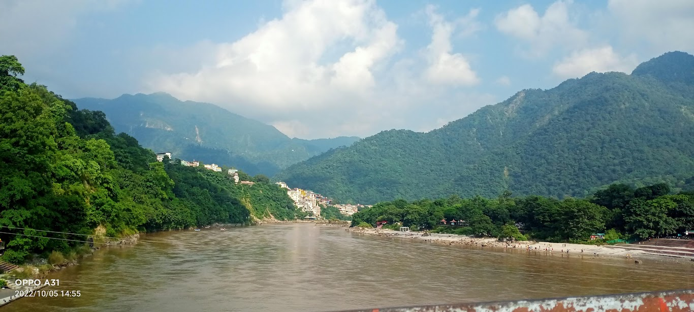

RISHIKESH

Trip Planning
There's something truly magical about embarking on a journey with your best friend. When the destination is as enchanting as Rishikesh, the experience becomes unforgettable. Join us as we recount the incredible journey of two friends from Lucknow to Rishikesh, with stops at Roorkee Junction, Haridwar, and the iconic Ram Jhula and Laxman Jhula in Rishikesh.
Lucknow to Roorkee Junction:
Our adventure began in the heart of Lucknow, as we boarded the train to Roorkee Junction. The excitement was palpable, and the anticipation of exploring new places together filled the air. As we gazed out of the train window, we shared stories, laughter, and dreams of what awaited us in Rishikesh.
Roorkee to Haridwar:
Arriving at Roorkee Junction, we knew we were getting closer to the spiritual heart of India. The train ride to Haridwar was a beautiful journey through the heartland of Uttar Pradesh, with scenic views of the countryside and the majestic Ganges River accompanying us. We couldn't help but snap pictures of the picturesque landscapes and the vibrant life along the riverbanks.
Haridwar
Haridwar welcomed us with open arms, and we immersed ourselves in its spiritual aura. The evenings spent at Har Ki Pauri, witnessing the Ganga Aarti, were truly soul-stirring. Side by side, we experienced the mysticism of the place and felt the collective energy of the devotees and tourists who had gathered there. Our friendship deepened as we shared our reflections on the significance of this sacred city.
Rishikesh's Tranquil Charms:
Rishikesh is a haven for those seeking tranquility and adventure. Together, we explored the town's serene ashrams, participated in yoga sessions, and savored delicious vegetarian cuisine. The adrenaline rush from white-water rafting on the Ganges and the calm we found during meditation sessions created a perfect balance in our trip.